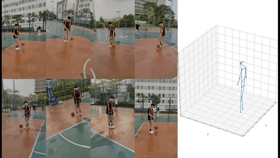

FreeMan scenarios
Cafe
Carridor
Courtyard
Dance Room
Library
Lobby

Park
Platform

Sport court

We present FreeMan, the first large-scale, real-world multi-view dataset. FreeMan was captured by synchronizing 8 smartphones across diverse scenarios. It comprises 11M frames from 8000 sequences, viewed from different perspectives. These sequences cover 40 subjects across 10 different scenarios, 27 locations, each with varying lighting conditions.


@article{wang2023freeman,
title={FreeMan: Towards Benchmarking 3D Human Pose Estimation in the wild},
author={Wang, Jiong and Yang, Fengyu and Gou, Wenbo and Li, Bingliang and Yan, Danqi and Zeng, Ailing and Gao, Yijun and Wang, Junle and Zhang, Ruimao},
year={2023}
}